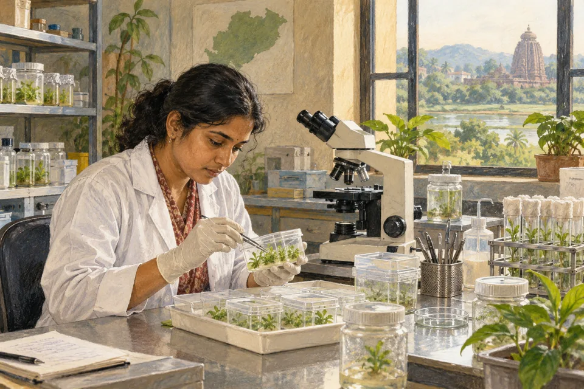

Biotechnology Landscape in Odisha: Problems and Prospects
Read in book
While it might appear that biotechnology has been a "nonstarter" in Odisha in the past, recent developments suggest a strong push by the State Government to foster its growth. It's an emerging sector facing typical challenges of a nascent industry.
Historical Challenges :
- Lagging Infrastructure: Biotechnology requires highly specialized and expensive infrastructure (labs, incubators, specialized equipment). The much awaited Biotechnology Park at Andharua in the outskirts of the capital city could not make substantial progress in promoting biotechnology in the State. Bharat Biotech has of course invested Rs 1500 crore in the project but it is confined to a vaccine manufacturing facility. Historically, Odisha lacked sufficient advanced infrastructure to support a thriving biotech ecosystem.
- Talent Pool and Skill Gap: While Odisha has large number of academic institutions, there has been a gap in producing a highly skilled workforce specifically tailored to industry demands in biotechnology, and attracting top-tier talent.
- Limited Private Investment: Biotech is a long-gestation, high-risk sector. Attracting significant private investment can be challenging without a proven track record and a robust ecosystem. To attract investment, the State needs to offer competitive advantages to the prospective investors.
-Weak Industry-Academia Linkages: A disconnect between academic research and industrial application hinders the translation of scientific breakthroughs into commercial products. It is quite significant for growth of the sector.
- Policy and Regulatory Environment : The biotechnology policies in the past could not have been sufficiently comprehensive or attractive to stimulate significant growth in the field.
-Lack of Entrepreneurial Ecosystem: Building a vibrant startup culture in a specialized field like biotech takes time and dedicated support. The State Government needs to take up it as a priority sector.
Current Efforts and Positive Indicators :
The Odisha Government is making significant strides to address these challenges and promote biotechnology as a key growth sector in future.
- Odisha Biotechnology Policy 2024: This policy offers various incentives, including capital investment subsidies, credit linkage for large units, technology acquisition and upgradation subsidies, and assistance for intellectual property (IP) registration (patents, trademarks).
- Development of Biotechnology" Scheme (2025-26 to 2029-30): The Cabinet approved a an ambitious scheme with an outlay of over Rs 1,113.50 crore. This comprehensive scheme includes 17 sub-schemes. Its objectives are to:
A) Promote higher education, research, and infrastructure development in biotechnology.
B) Develop a supportive ecosystem for "5 Is" – Innovation, Incubation, Investment, Income, and Impact.
C) Realign academic excellence with industry needs.
D) Promote product/process development and commercialization, and IP monetization.
E) Leverage breakthrough innovations for socio-economic development across various sectors (healthcare, agriculture, environment, industry).
The State has some reputed Existing Research Institutions who can play a vital role in promoting biotechnology sector.
1. Institute of Life Sciences (ILS), Bhubaneswar: An autonomous research institution by the Department of Biotechnology (DBT), it conducts high-quality multidisciplinary research in infectious diseases, cancer biology, genetic & autoimmune disorders, and plant and microbial biotechnology. ILS also focuses on human resource generation.
2. Other Institutions: Universities and institutions like Utkal University (Department of Biotechnology), Odisha University of Technology and Research (Biotechnology Department), and the Regional Institute of Biotechnology are actively engaged in research, training, and skill development.
There must be adequate focus on Skill Development and Human Resources: The new scheme aims to realign academic curricula and enhance skill development programs to produce industry-ready graduates.
The government is also fostering collaboration between industry, academia, and research.
Biotechnology has been identified as a thrust sector in the state's Industrial Policy Resolution (IPR) 2022, aligning with the "Viksit Odisha @ 2036" vision.
Although Odisha might have lagged in biotechnology development in the past, the current proactive measures by the State Government , including substantial financial commitments, dedicated policies, and a focus on research, education, and industry linkages, indicate a strong intent to make biotechnology a significant contributor to the state's economy. It is now more accurate to view biotechnology in Odisha as a sector with immense potential that is actively being nurtured for future growth in the State’s economy.